01 / Overview and method
Different bodies.
A shared language of motion.
EgoLAP learns from egocentric human and robot trajectories by expressing motion intent in language. Structured language actions describe what to do; motion-level reasoning explains why the motion fits the scene.
Human · MECKA, Scale, Aria
Bimanual robot demonstrations
AgiBot, Galaxea, MolmoAct2
Single-arm robots, including DROID
Different motions can serve the same intent.
Language actions describe what moves, but the same task can require different motions from a human and a robot. Motion-level reasoning explains why the motion works—how contact, geometry and object affordances lead to the intended effect—so that knowledge can transfer across embodiments.
Fold the cloth into a square
Different trajectories; shared intent: secure the cloth and bring one half over the other.
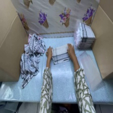
Align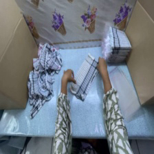
Lift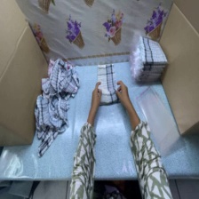
Fold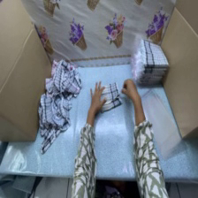
PressThe left hand maintains its grip and shifts rightward, bringing the left side over while the right hand anchors the opposite fold.
L: move forward 4 cm, move down 1 cm… R: move back 5 cm, move down 4 cm…
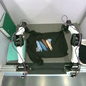
Align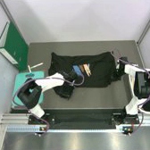
Lift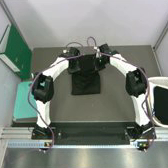
Fold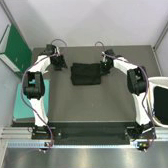
PressWith both corners firmly grasped, the arms lift upward and advance to fold the lower half over the upper half.
L: close gripper, move forward 7 cm… R: move forward 7 cm, move up 4 cm, keep gripper closed…
No reasoning or language-action text is generated. The expert uses observation representations and never attends to reasoning or language-action tokens.
02 / Zero-shot transfer
From human trajectories
to unseen robot configurations.
We evaluate on a customized bimanual YAM robot with unseen arm placement and camera configuration, and on 14 simulated tasks. No model is trained on simulation data. EgoLAP reaches 80.1% mean task progress in the real world and 38.3% success in simulation.
Mean real-world task progress
Gain over alternative action representations
Zero-shot simulation success
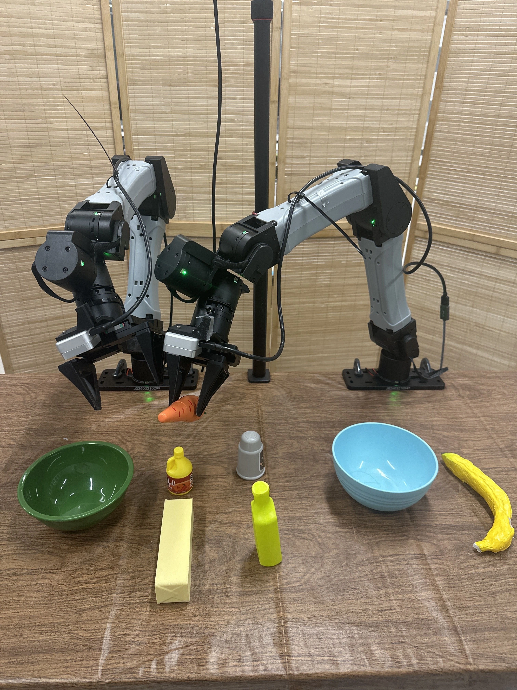
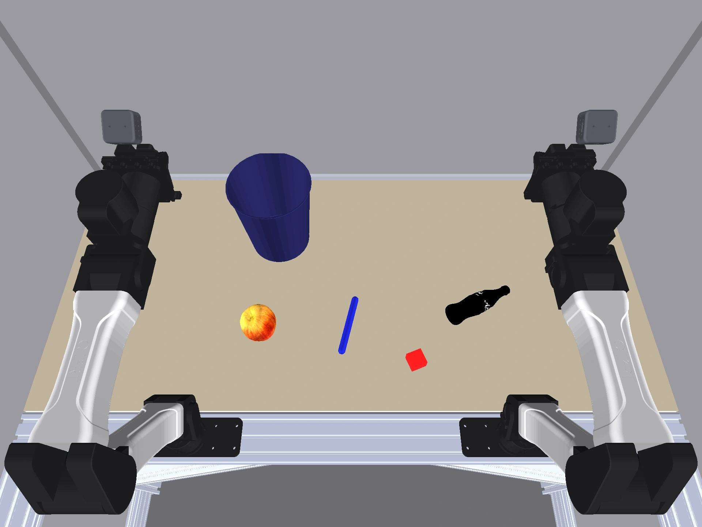
Real-world task progress
Open original ↗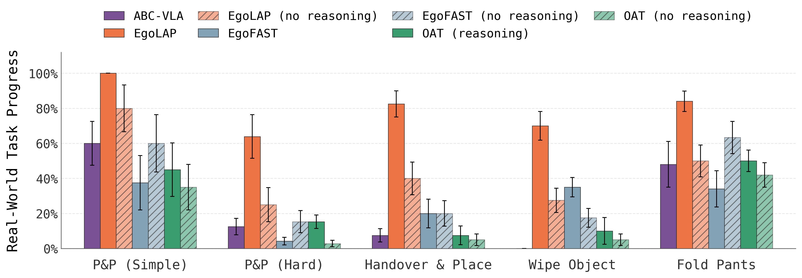
Zero-shot simulation success
Open original ↗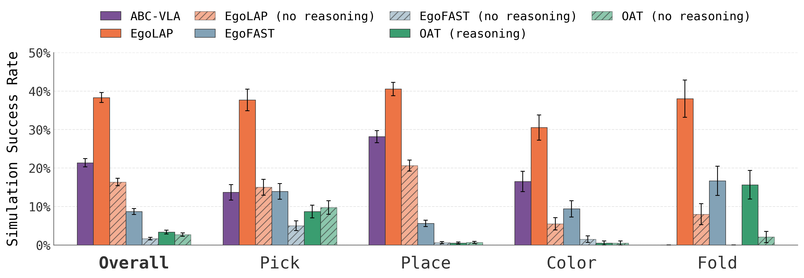
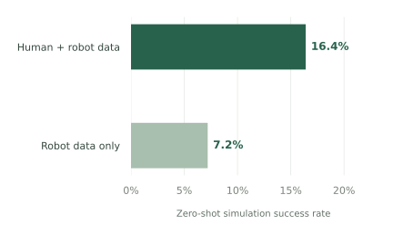
Human data makes a difference
With the language-action representation held fixed and no reasoning supervision, adding egocentric human data raises simulation success from 7.2% to 16.4%—a 2.3× gain.
The simulator is unseen during training, making this a direct test of transfer across both embodiment and visual domain.
03 / The policy in action
Human experience. Robot skills.
One policy, multiple manipulation behaviors. Select a task to explore the rollouts.
04 / Beyond pre-training
Built for transfer.
Ready for adaptation.
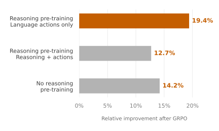
Reinforcement learning on language actions
Structured language actions are machine-parseable and can be scored against demonstrated motion. GRPO post-training improves simulation performance while keeping the vision encoder and continuous action expert frozen.
Sampling language actions without generating reasoning gives the stronger improvement in this experiment. Deployment continues to use continuous actions without decoding text.
Citation
@misc{zha2026egolaplearningegocentrichuman,
title={EgoLAP: Learning from Egocentric Human Data through Language-Action Reasoning},
author={Lihan Zha and Shresth Grover and Tenny Yin and Samuel M. Bateman and Hengkai Pan and Mengchao Zhang and Aykut Onol and Allen Z. Ren and Dhruv Shah and Anirudha Majumdar},
year={2026},
eprint={2610.08726},
archivePrefix={arXiv},
primaryClass={cs.RO},
url={https://arxiv.org/abs/2610.08726},
}